연간 계획 수립
- 자료실 › 운영 › 계획·소통 선택
- 학교급식 운영계획서의 근거와 점검항목 확인
- 업무서식의 예시를 내려받아 학교 실정에 맞게 수정
- 학교운영위원회 심의자료에서 심의 시기 확인

자료 찾기부터 점검표 출력까지 화면 순서대로 안내합니다.
로그인 없이 누구나 이용할 수 있습니다.
 ARCHIVE
ARCHIVE업무별 법적 근거, 점검 기준, 절차와 서식을 차례로 제공합니다.
 CHECKLIST
CHECKLIST2026 위생점검표·운영평가표 항목에서 관련 서류와 업무를 확인합니다.
 CALENDAR
CALENDAR업무 주기를 학교급식 연간 일정에 맞추어 제공합니다. 2027 공개 예정
경기도교육청 미래학교급식 플랫폼 TF가 만들고 운영합니다.
영양·식생활교육 노션 연구단의 자료를 바탕으로 하였습니다.
팀장김소리팀원양지현 · 이수빈 · 임서영
학교급식 업무 46건을 운영·위생·교육 3개 영역과 세부 분류로 정리하였습니다.
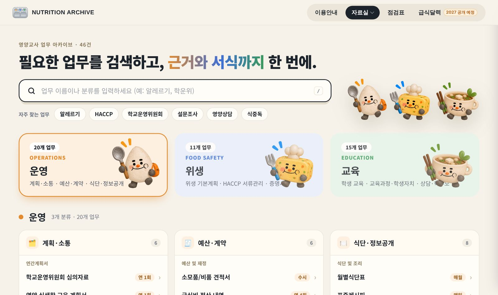
1 2 3 4 5업무 이름을 정확히 몰라도 됩니다. 떠오르는 낱말 하나만 입력하십시오.
찾은 낱말은 노란색으로 표시됩니다. 검색어를 지우면 원래 목록으로 돌아갑니다.
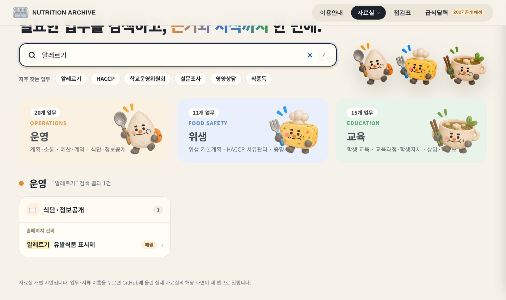
업무를 누르면 화면 오른쪽에 상세 내용이 열립니다. 위에서부터 차례로 읽으면 됩니다.
| 근거 | 학교급식법, 같은 법 시행령·시행규칙, 학교급식 기본방향 등 관련 조문 |
|---|---|
| 점검항목 | 2026 위생점검표·운영평가표 중 해당 업무와 연결된 항목, 부적합 기준, 주요 지적 사항 |
| 절차 | 업무 수행 순서와 시기 |
| 참고자료 | 업무 정리에 활용한 지침, 매뉴얼 등 원문 자료 |
| 업무서식 | 학교 실정에 맞게 수정하여 활용할 수 있는 서식 및 예시 파일(한글·엑셀) |
| 참고사이트 | 식품안전나라, 국가법령정보센터 등 관련 기관 누리집 |
항목 제목을 누르면 접거나 펼칠 수 있습니다. 닫을 때는 오른쪽 위 ×를 누릅니다.
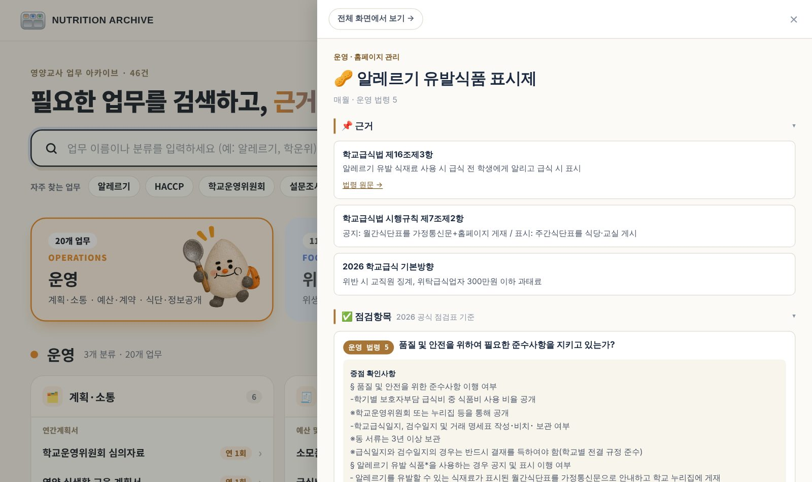
1CCP/CP 기록지처럼 자료가 많은 업무는 단계별로 정리하였습니다.
위쪽 단계 단추(식단검토, 검수, CCP1 등)를 누르면 그 단계로 이동합니다.
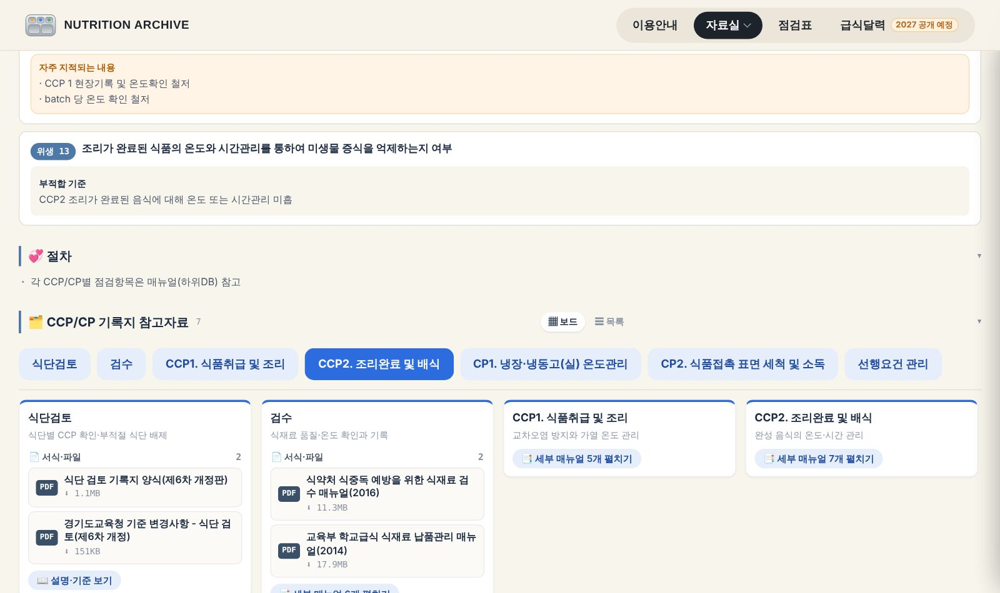
점검표 항목에서 필요한 서류를 거꾸로 찾는 화면입니다. 점검을 앞두고 빠진 서류를 확인할 때 쓰십시오.
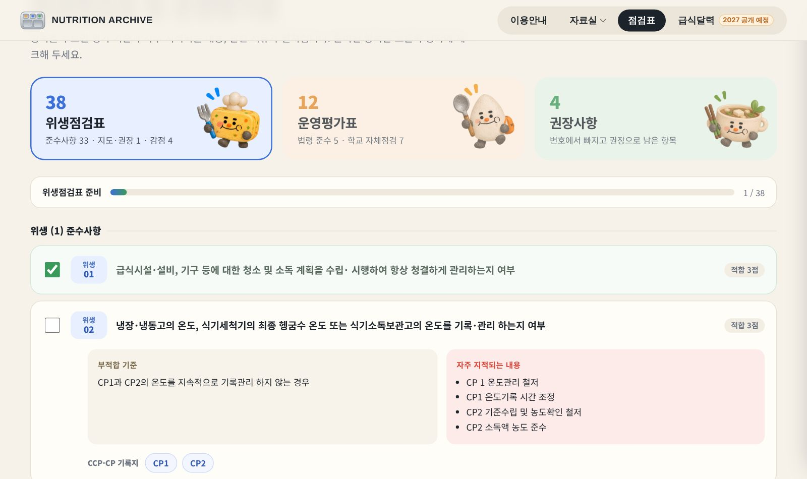
1 2 3 4학기별 교육청 위생점검·운영평가를 준비하는 화면입니다.
위치: 자료실 › 위생 › 위생점검표 및 운영평가표
2점검단 보기에 체크하면 고칠 수 없는 화면으로 바뀝니다. 점검 당일 점검단에게 보여 줄 때 쓰십시오.
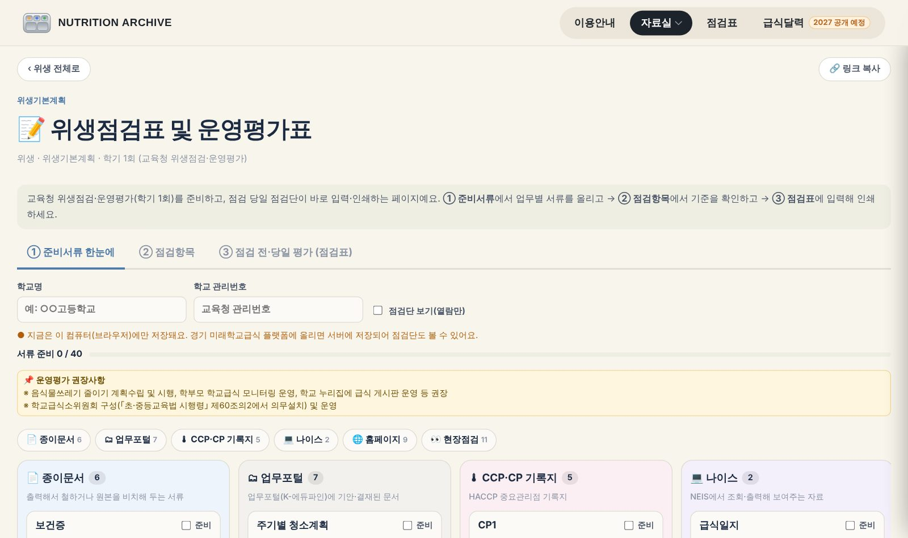
1 2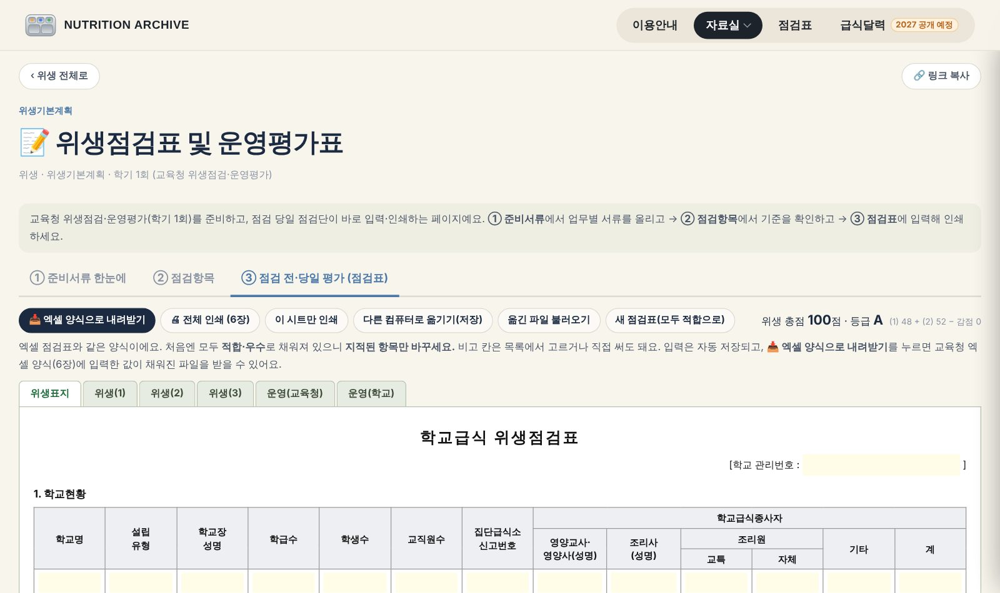
1 2해야 할 업무를 날짜별로 보여 주는 달력입니다.
지금은 미리보기이며, 2027년에 정식으로 공개합니다.
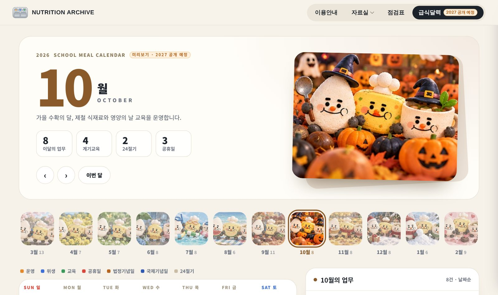
1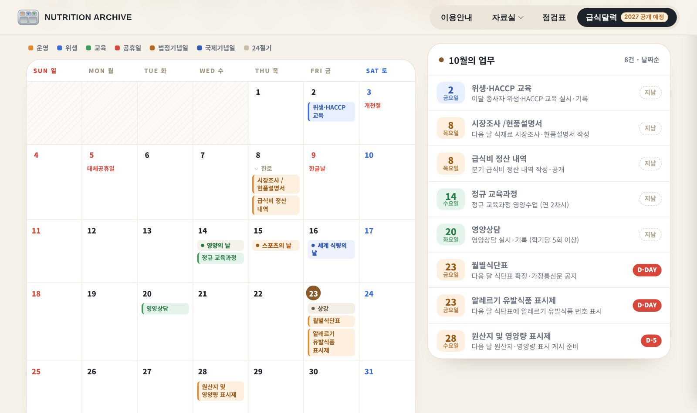
휴대전화에서도 같은 주소로 이용할 수 있습니다. 조리실에서 점검 기준을 바로 확인할 때 편리합니다.
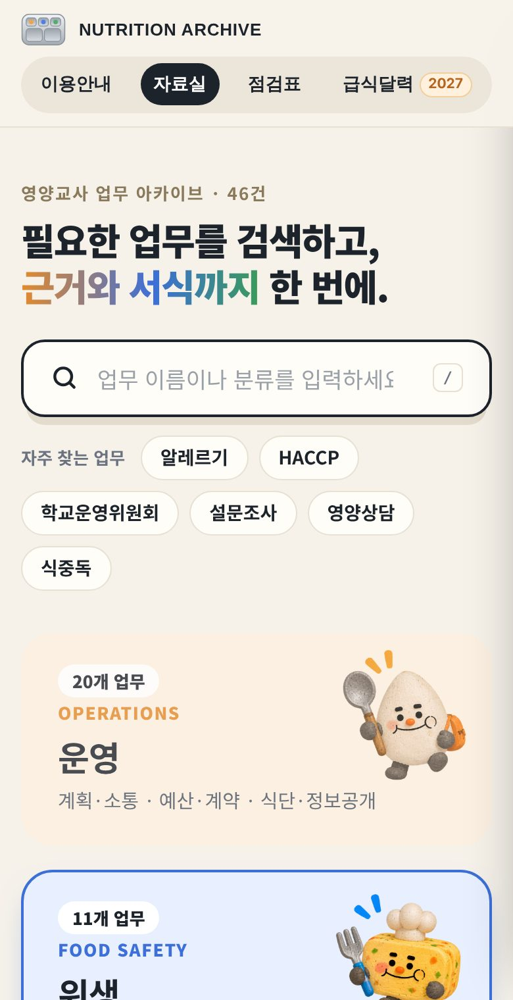
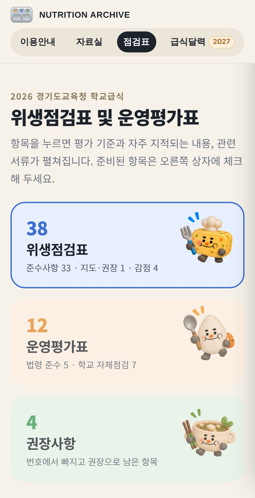
학교급식 위생점검표 및 운영평가표의 구분을 따랐습니다.
참고자료는 읽어 보는 원문(지침, 매뉴얼 등)입니다. 업무서식은 내려받아 고쳐 쓰는 파일입니다.
체크 표시와 입력 내용은 지금 쓰는 컴퓨터에만 저장됩니다. 점검표 입력 내용은 ‘다른 컴퓨터로 옮기기(저장)’로 옮길 수 있습니다.
파일을 열면 점수가 다시 계산됩니다. 연 뒤 한 번 저장하십시오. 그래도 다르면 TF로 알려 주십시오.
학교급식법령, 2026학년도 학교급식 기본방향, 학교급식 위생관리지침서(제6차 개정)를 기준으로 하였습니다. 실제 업무에는 최신 공문을 함께 확인하십시오.
경기도교육청 미래학교급식 플랫폼 TF로 알려 주시기 바랍니다. 확인 후 수정하여 반영하겠습니다.